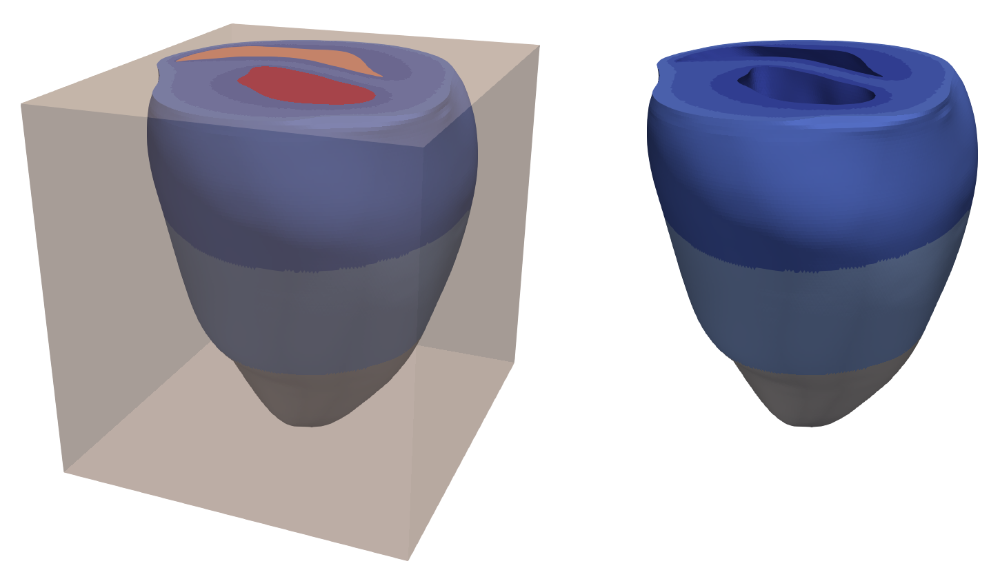
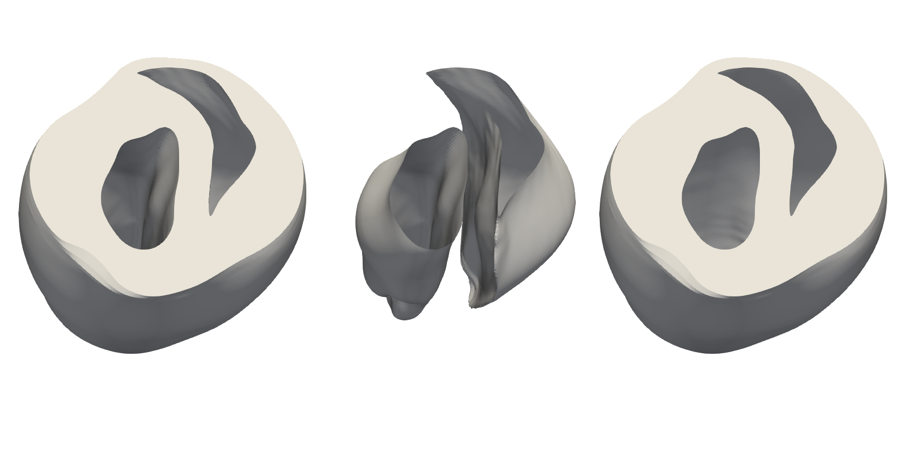
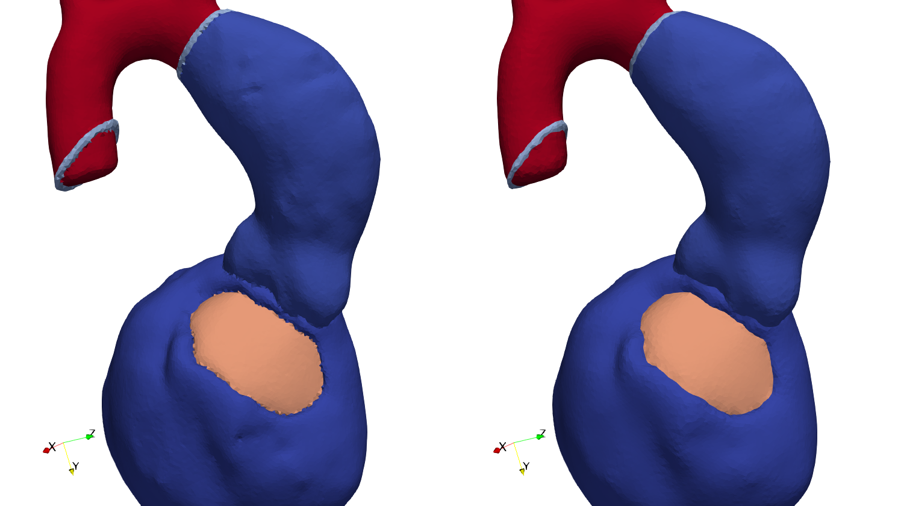
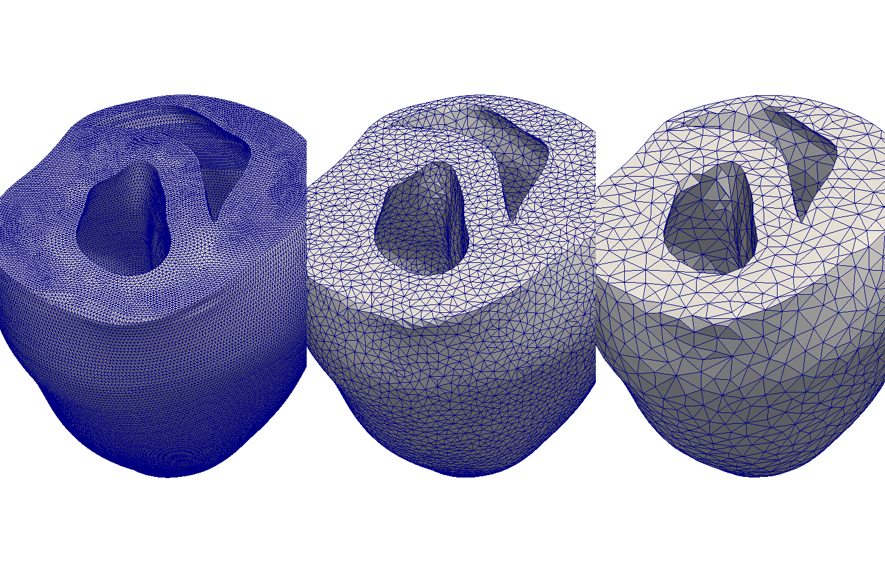

Meshtool - A mesh manipulation utility
Introduction
Meshtool is a comand-line tool written in C++. It is designed to apply various manipulations to volumetric meshes. The mesh manipulations are referred to as “meshtool modes”. This are verbs that describe what meshtool is supposed to do with a mesh. The most important modes are:
- extract : Extract submeshes, surfaces or data from a given mesh.
- insert : Insert mesh information or data from a submesh back into the mesh.
- convert : Convert between CARP, VTK, VTU and MMG binary and ascii formats.
- map : Map index sets (e.g. vertex lists, surfaces) between mesh subsets.
- query : Query various mesh informations like bounding-box, tags, resolution or quality.
- smooth : Smooth surfaces between multiple regions, while preserving mesh quality.
- resample : Increase or reduce resolution of meshes, mesh regions and Purkinje systems.
Most modes require the user to specify an object (e.g. what to extract or insert) followed by mandatory and optional mode options.
Supported Mesh Formats
The currently supported mesh formats are:
- CARPentry: Ascii and binary formats used by the CARPentry cardidac electrophysiology simulator.
- VTK: Ascii and binary legacy formats used by The Visualization Toolkit (VTK).
- VTU: Binary format used by VTK.
- MMG: Ascii format used by MMG3D.
- OBJ: Wavefront ascii format. Used only for surfaces.
Building
No 3rd-party libraries are required. The code is being built and used under many Linux distros, MacOS and Windows 10 (using WSL).
Meshtool is build (in parallel, no -j option required) via the command
make
The compiled binary is then located in
meshtool/meshtool
The build process can be customized in the my_switches.def file. This file is autogenerated
by the first build run. There, the user can configure some basic
build settings like:
- Compile in debug or in optimized mode.
- Link statically, if static librarie are availiable.
- Use OpenMP.
- Use (
long,double) or (int,float) for (mt_int,mt_real) - choose between intel, gnu, clang compilers
Usage
The meshtool help is called with:
meshtool help
This will display some help information and a list with all currently included modes:
clean quality deform mesh elements to reach a certain quality threshold value
clean topology clean the mesh from bad topology definitions.
convert convert between different mesh formats
collect merge a mesh with datasets
extract data data defined on a mesh is extracted for a given submesh
extract gradient compute gradient and gradient magnitude of a scalar function on a mesh
extract mesh a submesh is extracted from a given mesh based on given element tags
extract myocard the myocardium is extracted from a given mesh
extract surface extract a sequence of surfaces defined by set operations on element tags
extract unreachable extract elements that are unreachable through edge-traversal from a given start vertex
extract volume extract elements inside a given box volume
generate fibres generate default fibers for a given mesh file
generate distancefield generate a distancefield between two surfaces
generate mesh generate a tetrahedral mesh from a list of nested triangle surfaces
insert data data defined on a submesh is inserted back into a mesh
insert meshdata the fiber and tag data of a mesh is inserted into another mesh
insert submesh a submesh is inserted back into a mesh and written to an output mesh
interpolate clouddata interpolate data from a pointcloud onto a mesh
interpolate elemdata interpolate element data from one mesh onto another
interpolate elem2node interpolate data from elements onto nodes
interpolate node2elem interpolate data from nodes onto elements
interpolate nodedata interpolate nodal data from one mesh onto another
itk close Apply closing (i.e. dilate-erode) algorithm to itk data
itk crop remove surrounding whitespace
itk dtype convert datatype
itk extract extract slices of an itk image stack
itk flip flip the voxel data along given axes
itk normalize Normalize voxel spacing
itk padding add padding to voxel data
itk refine refine voxel data
itk sample create an itk image stack from sampeling surfaces
itk smooth Smooth the voxel data
map map .vtx, .surf and .neubc files to the indexing of a submesh
merge surface merge the geometry given by a closed surface mesh into a different mesh
merge meshes merge two meshes, unifying co-located vertices
query bbox print the bounding box of a given mesh
query curvature compute the curvature of a surface
query edges print several statistics related to the mesh edges
query graph print the nodal connectivity graph
query idx print indices in a proximity to a given coordinate
query insidepoint get a point inside a given closed surface
query quality print mesh quality statistics
query tags print the tags present in a given mesh
reindex reindex a mesh to improve matrix bandwidth and cache efficiency
resample mesh resample a tetrahedral mesh to fit a given edge size range
resample purkinje resample purkinje cables as close as possible to a segment size
resample surfmesh resample a triangle mesh to fit a given edge size range
restore mapping restore nodal and element mapping for a submesh w.r.t. a reference mesh
smooth data smooth data defined on a mesh
smooth mesh smooth surfaces and volume of a mesh
smooth surface smooth one or multiple surfaces of a mesh
split generate the split list for given split operations
To get further information about one specific mode, the user can call that mode without any options.
For example:
meshtool extract mesh
generates the output
Mesh extract error: Insufficient parameters provided.
extract mesh: a submesh is extracted from a given mesh based on given element tags
parameters:
-msh=<path> ... (input) path to basename of the mesh to extract from
-tags=tag1,tag2 ... (input) ","-seperated list of tags
-ifmt=<format> ... (optional) mesh input format. may be: carp_txt, carp_bin, vtk, vtk_bin, mmg, purk, stellar
-ofmt=<format> ... (optional) mesh output format. may be: carp_txt, carp_bin, vtk, vtk_bin, vtk_polydata, mmg, stellar
-submsh=<path> ... (output) path to basename of the submesh to extract to
Note that “basename” denotes the file path without the file format extension. If input / output formats are not provided, meshtool will default to CARP ascii format for writing and will default to first binary CARP and then ascii CARP (if no binary files are present) for reading. All options that are not marked as optional, are mandatory. Therefore, the extract mesh mode needs to be called as
meshtool extract mesh -msh=MESH -submsh=SUBMESH -tags=TAGS
Examples
Extracting a submesh
By convention, elements hold an additional integer value called element tag. You can extract submeshes by specifying a set of tags that should be extracted as a new submesh.
# store tags into variable (optional)
TAGS=125,150,175,225,250,275,325,350,375
# call meshtool
meshtool extract submesh -msh=TBunnyC -submsh=TBunnyC_i -tags=$TAGS
The following image shows the original mesh and the extracted myocardial submesh:

Computing complex surfaces via set operations
The extraction of complex surfaces can be expressed as set operations on the surfaces of the individual tags. For instance, the epicardial and endocardial surfaces of a heart immersed in a bath / blood pool, can be extracted by intersecting the myocardial surface with respectively the bath or the blood pools.
# store tags into variable (optional)
MYOCARD=125,150,175,225,250,275,325,350,375
BLOODPOOLS=500,600
BATH=400
# call meshtool
meshtool extract surface -msh=TBunnyC -surf=TBunnyC.epi,TBunnyC.endo -op=$MYOCARD:$BATH;$MYOCARD:$BLOODPOOLS
With the -surf parameter we specify (comma-seperated) the names of the two surfaces we generate. The -op parameter
defines the set operations: The colon (:) character specifies that we compute the set intersection between the left hand
side and the right hands side tag sets, the semicolon (;) character is the delimiter of the two set operations.
Optionally, the user can also specify the -ofmt parameter to not only generate a surface
definition file but additionally a full surface mesh (vertices, elements and fibers) in the
specified file format.

Smoothing a mesh
A mesh can be smoothed with meshtool in two ways: Either by selecting entire tag regions
with meshtool smooth mesh, or by specifying surfaces via surface files via meshtool smooth surface.
In this example we will show how entire tag regions of a mesh are smoothed:
meshtool smooth mesh -msh=LV.vtk -tags=* -thr=0.98 -iter=150 -smth=0.16 -outmsh=LV.smth.vtk
Using * for the tags, specifies that all tags shall be smoothed, with smooth interfaces
between the individual tag regions (see the help by typing meshtool smooth mesh for more information).
The quality threshold is set to 0.98, as we want to sacrifice some mesh quality for more
smoothness. The smoothness coefficient of 0.16 is of moderate value, the coefficient should
be between 0.1 and 0.3.

Resampling a mesh to a different resolution
The discretization size of a surface or volumetric mesh can be changed with the resampling mode of meshtool. The user can specify minimum and/or maximum edge lengths.
For volumetric meshes, veshtool will first collapse edges smaller than the minimum edge length and then split edges larger than the maximum edge length.
For surface meshes, meshtool will iteratively collapse and split edges until either no edges can be updated anymore or all edges are inside the specified length interval.
In the following example we have resampled the surface of a mesh with an average edge length of approx. 250 um to approx 700 um and 1300 um. The commands were
meshtool resample surfmesh -msh=TBC.surfmesh -min=500 -outmsh=TBC.surfmesh.crs -surf_corr=0.95
meshtool resample surfmesh -msh=TBC.surfmesh -min=1000 -outmsh=TBC.surfmesh.crsbig -surf_corr=0.95
The -surf_corr parameter specifies how closely the surface form should be preserved. The
value denotes the threshold correlation value of two surface normal vectors of an edge that can
be collapsed.

Advanced workflows with meshtool
Example of more advaced workflows with meshtool can be found here.
Code Documentation and Structure
In addition to this documentation, there exists a doxygen documentation of most code parts. It can be build with
make doxygen
and is located in the doxydoc folder.
The code is organized as a set of utility functions and classes located in meshtool/utils.
This utility building blocks are then used in the meshtool modes, located in meshtool/modes, to implement
certain mesh manipulations. The utilities are designed in a general way to encourage recombination in
different ways. Some recombinations are located in the standalone tools in meshtool/standalones.